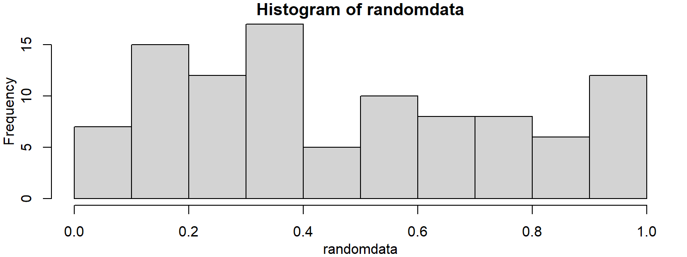
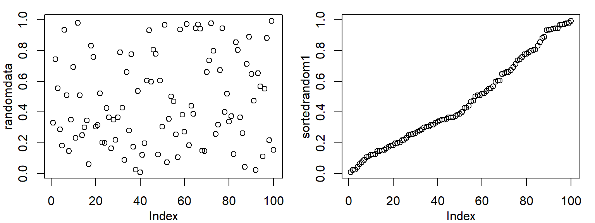

Updated 2021/04/16
The Book of R: section 2.3 (vectors), chapter 3 (matrices), 4.1 (logicals), 4.2 (characters/strings)
#Lots of things you can do with numeric variables
x = 2
x## [1] 2y = 2*x-3
y## [1] 1paste("x=",x," 2*x-3=",y)## [1] "x= 2 2*x-3= 1"x = x+1
x## [1] 3x = x-1
x## [1] 2x = x*1.5
x## [1] 3y = x**2
y## [1] 9x = y**(1/2)
x## [1] 3z = exp(1)
z## [1] 2.718282x = z/2
x## [1] 1.359141paste("exp(1)/2 =", x)## [1] "exp(1)/2 = 1.35914091422952"# this is a string...
DNA = "ACGGGAGGACGGGAAAATTACTACGGCATTAGC"
#single vs. double quotes
s = "string123"
#s2 = "string"123" #what's happening here? Fix the code. (uncomment the line to see the error)
s3 = 'string123'
s4 = 'string"123' #what's happening here? Fix the code.
# concatenate (join) strings
s = paste(s, s3)
s = cat(s, s) # what is s?## string123 string123 string123 string123#Note: cat and paste have different return values. You can see what a command returns in the help page.
cat(s,s) #same thing as above cat command, but we don't need the return value, so we don't catch it in a variable. This would be the normal way to use the cat command.
# nchar() finds string length
n = nchar(DNA)
# substrings give you part of a string. Start counting at 1
alphabet = "abcdefghijklmnopqrstuvwxyz"
substr(alphabet,3,5)## [1] "cde"#Substitution demo
sub("A", "T", DNA)## [1] "TCGGGAGGACGGGAAAATTACTACGGCATTAGC"gsub("A", "T", DNA)## [1] "TCGGGTGGTCGGGTTTTTTTCTTCGGCTTTTGC"# what does the g mean?
sub("GA", "CT", DNA) # what happens if I include multiple characters in the pattern?## [1] "ACGGCTGGACGGGAAAATTACTACGGCATTAGC"# If I want to save the output
DNA2=gsub("A", "T",DNA)
#Translation demo
chartr("A", "T", DNA)## [1] "TCGGGTGGTCGGGTTTTTTTCTTCGGCTTTTGC"chartr("ACGT", "AAAA", DNA) # how is this different from substitution?## [1] "AAAAAAAAAAAAAAAAAAAAAAAAAAAAAAAAA"# Using string operations to answer a biological question
# What is the reverse complement of a DNA sequence?
# DNA = readline("Please enter a DNA sequence. I will return the reverse complement.\n\n")
DNA <- "GATTACA" # skipping the readline part to knit the website
# Print the DNA onto the screen
cat("\nHere is the starting DNA sequence:\n")##
## Here is the starting DNA sequence:cat(DNA)## GATTACAcat("\n\n")# Calculate the reverse complement
# Warning: this attempt will fail!
#
# First, copy the DNA into new variable revcom
# (short for REVerse COMplement)
# It doesn't matter if we first reverse the string and then
# do the complementation; or if we first do the complementation
# and then reverse the string. We'll get the same result each time.
# So when we make the copy we'll do the reverse in the same statement.
#
revcom = paste(rev(strsplit(DNA, NULL)[[1]]), collapse="")
#
# Next substitute all bases by their complements,
# A->T, T->A, G->C, C->G
#
revcom = gsub("A","T", revcom)
revcom = gsub("T","A", revcom)
revcom = gsub("G","C", revcom)
revcom = gsub("C","G", revcom)
# Print the reverse complement DNA onto the screen
cat ("Here is the reverse complement DNA:\n")## Here is the reverse complement DNA:cat(revcom)## AGAAAAG#
# Oh-oh, that didn't work right!
# Our reverse complement should have all the bases in it, since the
# original DNA had all the bases-but ours only has A and G!
#
# Do you see why?
cat("\n\nThat was a bad algorithm, and the reverse complement was wrong!\n")##
##
## That was a bad algorithm, and the reverse complement was wrong!# readline("Press enter to try again\n\n")
# Make a new copy of the DNA (see why we saved the original?)
revcom = paste(rev(strsplit(DNA, NULL)[[1]]), collapse="")
revcom = chartr("ACGTacgt", "TGCAtgca", revcom)
#Print the reverse complement DNA onto the screen
cat ("Here is the reverse complement DNA:\n")## Here is the reverse complement DNA:cat(revcom)## TGTAATCcat("\n\n")cat("This time it worked!\n")## This time it worked!Write a program that does the following:
Remember to use a code chunk in this R notebook to run your code
#Add your exercise code here. You can create your own code chunk by typing the text you see at the start "```{r}" and end "```" of the chunk, or by using the 'insert' button at the top of this editor tab
n1 <- readline("What is the first number?\n")## What is the first number?is(n1) #can we do math on this?## [1] "character" "vector" "data.frameRowLabels"
## [4] "SuperClassMethod"n1 <- as.numeric(n1) #coerce to numeric type
n2 <- as.numeric(readline("What is the second number?\n"))## What is the second number?# nesting functions works too.
# readline("What is the second number?\n") | as.numeric > n2
print(n1 + n2)## [1] NAprint(n1 * n2)## [1] NAprint(n1 / n2)## [1] NAprint(
data.frame(sum = n1 + n2,
product = n1 * n2,
ratio = n1 / n2)
)## sum product ratio
## 1 NA NA NAnamed_vec <- c(
sum = n1 + n2,
product = n1 * n2,
ratio = n1 / n2
)
print(named_vec)## sum product ratio
## NA NA NAprint(named_vec["ratio"])## ratio
## NAnamed_vec["product"] <- -42
print(named_vec)## sum product ratio
## NA -42 NAc() functionvector = c(1,2,3,4)
vector## [1] 1 2 3 4x = c(1.2,2,54,6)
x## [1] 1.2 2.0 54.0 6.0y = c(10,23.4,2,3)
y## [1] 10.0 23.4 2.0 3.0# We can multiply two vectors element by element
print(x*y)## [1] 12.0 46.8 108.0 18.0# Can also do a dot product of two vectors
x %*% y## [,1]
## [1,] 184.8#Note: In the console, you don't need to use print()textvec=c("Patient1","Patient2","Patient3")
textvec## [1] "Patient1" "Patient2" "Patient3"#Not compatible with arithmetic
#print(textvec * 2) #gives an errorlogicvec=c(TRUE,FALSE,TRUE,FALSE)
logicvec## [1] TRUE FALSE TRUE FALSE#Can also write:
c(T,F,T,F)## [1] TRUE FALSE TRUE FALSEtextvec[1]## [1] "Patient1"textvec[3]## [1] "Patient3"#We can also simultaneously access multiple elements
textvec[1:2]## [1] "Patient1" "Patient2"textvec[c(1,1,3,3)]## [1] "Patient1" "Patient1" "Patient3" "Patient3"#The length command
length(textvec)## [1] 3#R allows named elements
namedvec=c(firstcol=3, B=245, C=1212, lastelement=29.3)
namedvec## firstcol B C lastelement
## 3.0 245.0 1212.0 29.3#We can then access the elements using the names
namedvec["firstcol"] * 10## firstcol
## 30#If we access an element with the wrong name we get NA
namedvec["asdf"]## <NA>
## NA#names() returns the vector of names
names(namedvec)## [1] "firstcol" "B" "C" "lastelement"Create a vector “radii” of length three containing the numbers 5, 10 and 20. Use “*” and the built-in constant “pi” to compute the areas of the three circles. Then subtract 2.1 and recompute the areas
Use the “seq” and “sum” functions for this exercise - remember, you can always look up help using help(function): Generate a vector “counter” with a sequence of numbers from 1 to 100. Compute the sum of these numbers
Generate a vector “randomdata” of length 100 with random numbers using the command “runif”
Bonus: Make a vector sorter that will sort the random numbers using the “order” function and return the sorted random data in “sortedrandom”
# 1 ----
radii <- c(5,10,20)
pi * radii * radii## [1] 78.53982 314.15927 1256.63706pi * radii^2## [1] 78.53982 314.15927 1256.63706pi * (radii - 2.1) ^2## [1] 26.42079 196.06680 1006.59770# 2 ----
str(seq(from=1,to=100))## int [1:100] 1 2 3 4 5 6 7 8 9 10 ...str(1:100)## int [1:100] 1 2 3 4 5 6 7 8 9 10 ...identical(seq(from=1,to=100),1:100)## [1] TRUEcounter <- seq(1,100)
sum(counter)## [1] 5050sum(1:100)## [1] 5050# 3 ----
par(mar=c(3,3,1,1),mgp=2:0) #formatting the plots, ignore me
randomdata <- runif(100)
hist(randomdata)
sortedrandom1 <- sort(randomdata)
sortedrandom2 <- randomdata[order(randomdata)]
identical(sortedrandom1,sortedrandom2)## [1] TRUEsortedindex <- order(randomdata)
sortedrandom3 <- randomdata[sortedindex]
all(sortedrandom1 == sortedrandom3)## [1] TRUEpar(mfrow=c(1,2)) #more plot formatting, ignore me again
plot(randomdata)
plot(sortedrandom1)
A matrix is like a 2D vector (i.e. a square or rectangle). Like a spreadsheet table with rows, columns
#Create with the matrix command
firstmat = matrix(c(1,2.3,3,4,5.3,6.4),nrow=2,ncol=3,dimnames = list(c("row1","row2"),c("col1","col2","col3")))
firstmat## col1 col2 col3
## row1 1.0 3 5.3
## row2 2.3 4 6.4#Values are given in the first argument, the dimensions in the 2nd/3rd argument, dimension names in the last argument
#We can extract whole rows and columns like this
firstmat[,1] #first column. firstmat[,2] – second column## row1 row2
## 1.0 2.3firstmat[1,] #first row## col1 col2 col3
## 1.0 3.0 5.3#We can also access rows and columns by name
firstmat[,"col2"]## row1 row2
## 3 4#We can access single elements or subsets of the matrix like this
firstmat[1,2]## [1] 3firstmat[1:2,2:3]## col2 col3
## row1 3 5.3
## row2 4 6.4Create a matrix with 3 columns and 10 rows
Fill it with random numbers using the runif() command
Calculate the average value in the matrix using the mean() command
# fiddling
matrix(1:10,nrow=2,ncol=5)## [,1] [,2] [,3] [,4] [,5]
## [1,] 1 3 5 7 9
## [2,] 2 4 6 8 10matrix(1:10,nrow=2,ncol=5,byrow=T)## [,1] [,2] [,3] [,4] [,5]
## [1,] 1 2 3 4 5
## [2,] 6 7 8 9 10# 1 ----
ourrandommat <- matrix(runif(30),nrow=10,ncol=3)
str(ourrandommat)## num [1:10, 1:3] 0.209 0.049 0.225 0.639 0.213 ...dim(ourrandommat)## [1] 10 3colnames(ourrandommat) <- c("one",2,"the third")
rownames(ourrandommat) <- paste("row",seq(1,nrow(ourrandommat)))
dimnames(ourrandommat)## [[1]]
## [1] "row 1" "row 2" "row 3" "row 4" "row 5" "row 6" "row 7" "row 8"
## [9] "row 9" "row 10"
##
## [[2]]
## [1] "one" "2" "the third"str(ourrandommat)## num [1:10, 1:3] 0.209 0.049 0.225 0.639 0.213 ...
## - attr(*, "dimnames")=List of 2
## ..$ : chr [1:10] "row 1" "row 2" "row 3" "row 4" ...
## ..$ : chr [1:3] "one" "2" "the third"ourrandommat## one 2 the third
## row 1 0.20885754 0.08128078 0.6307460
## row 2 0.04901239 0.33800276 0.5569489
## row 3 0.22483184 0.35499743 0.4403711
## row 4 0.63932337 0.72119006 0.9101958
## row 5 0.21335214 0.37943844 0.8256567
## row 6 0.44143892 0.83242731 0.7753981
## row 7 0.03716975 0.16958063 0.1975654
## row 8 0.58904557 0.93173390 0.1479901
## row 9 0.16951195 0.11190553 0.9092462
## row 10 0.91359830 0.12217425 0.3634315mean(ourrandommat)## [1] 0.4428808rowMeans(ourrandommat)## row 1 row 2 row 3 row 4 row 5 row 6 row 7 row 8
## 0.3069614 0.3146547 0.3400668 0.7569031 0.4728157 0.6830881 0.1347719 0.5562565
## row 9 row 10
## 0.3968879 0.4664013colMeans(ourrandommat)## one 2 the third
## 0.3486142 0.4042731 0.5757550